Guida Switch
Guida aggiornata al 19/02/2022 (piccoli aggiornamenti aggiunti successivamente).
Puoi utilizzare il menu qui a fianco per scorrere più facilmente tra le sezioni! ----->
È la guida giusta?
Questa guida è dedicata solo ed esclusivamente alla versione standalone.
La versione inclusa in "Danganronpa Decadence" non è supportata, almeno per il momento.
Non è supportata nemmeno la versione esclusivamente giapponese, ma solamente la versione "globale".
In generale, non ci riteniamo responsabili per alcun danno riscontrato durante l'installazione della traduzione.
A partire dalla v1.1, Nintendo Switch non è più supportata
L'unica versione attualmente supportata è quella su Steam.
Su Nintendo Switch è disponibile solo il prologo.
Lo sai che la traduzione è incompleta, vero?
Eh già, ed è anche (quasi) all'inizio!
Non ti aspettare che duri più di un paio di ore di gioco (durata del prologo).
Fortunatamente sarà molto facile installare futuri aggiornamenti!
Switch non modificata?
Non è possibile installare la traduzione su Nintendo Switch non modificate.
È necessario aver installato il custom firmware ("CFW") chiamato "Atmosphére".
Daremo anche per scontato che tu sappia già come si utilizza un PC, come si utilizza una Nintendo Switch, come si utilizza Atmosphére e come si utilizza l'homebrew menu.
Prerequisiti#
Lista dei prerequisiti
-
Atmosphére aggiornato all'ultima versione
-
Il programma homebrew NXDumpTool aggiornato all'ultima versione
-
Un PC con Windows 10 (o 11) a 64-bit con più di 15GB di spazio disponibili
-
Una scheda microSD con almeno 15GB liberi (escluso lo spazio occupato dal gioco)
-
Un lettore di microSD per PC (si trovano anche a 10€ su Amazon)
-
Un gestore di archivi in formato .zip/.rar/.7z, come WinRAR o 7-Zip
-
Il programma V3UPSManager
-
L'ultima versione rilasciata della traduzione italiana del gioco, sotto forma di file "Switch.7z" (puoi scaricarla dal nostro Canale Telegram o dal nostro Server Discord)
-
Da qualche minuto a qualche ora di tempo a causa di (lunghe?) attese durante la prima sezione
Informazione su NXDumpTool
NOTA:
In questa guida viene mostrata la versione 1.1.14 di NXDumpTool (la più recente al momento della stesura).
Ti chiediamo di utilizzare quella stessa versione, in modo da poter seguire la guida passo per passo.
In futuro la aggiorneremo nuovamente, così che le istruzioni all'uso di NXDumpTool siano accurate.
Nel frattempo, dovrai utilizzare una versione passata (la 1.1.14) e non quella più recente.
Ci scusiamo per il disagio.
Prima di iniziare#
Innanzitutto, scarica il file "win-x64.7z" di V3UPSManager.
Una volta fatto, estrai il contenuto dell'archivio in una nuova cartella, e tieni a mente dove lo hai estratto, dato che dovrai utilizzare quel programma più tardi.
Se non lo hai già fatto, estrai anche il file "Switch.7z" che contiene le patch in formato .UPS, necessarie per installare la traduzione, in una cartella del tuo PC (NON quella di V3UPSManager).
Collega la scheda microSD al PC, tramite adattatore se necessario, poi scarica il file .nro di NXDumpTool e spostalo nella cartella "switch" all'interno della tua scheda microSD.
È consigliato leggere tutta la guida in modo da avere già un'idea di cosa si sta per fare.
Estrarre i file del gioco#
Passaggio già svolto?
Se desideri solo aggiornare la traduzione, puoi semplicemente inserire la scheda microSD nel PC tramite il lettore e passare direttamente alla prossima sezione.
Questo, ovviamente, a patto che tu non abbia cancellato i file del gioco che estrarremo in questa sezione.
Al contrario della versione PC, non è possibile interagire con i file del gioco senza prima estrarli, cosa che possiamo fare con il programma homebrew "NXDumpTool".
Avvia Atmosphére, poi apri l'Album (che reindirizza automaticamente a HBMenu), e successivamente apri NXDumpTool, assicurandoti che la tua console sia carica e collegata a una fonte di alimentazione adeguata.
Aprire l'album
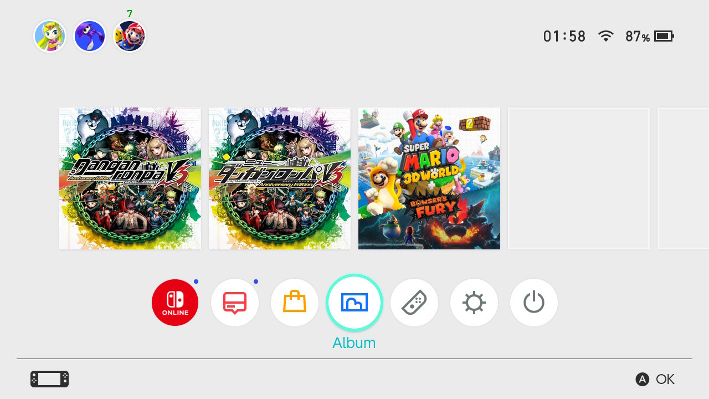
Aprire NXDumpTool
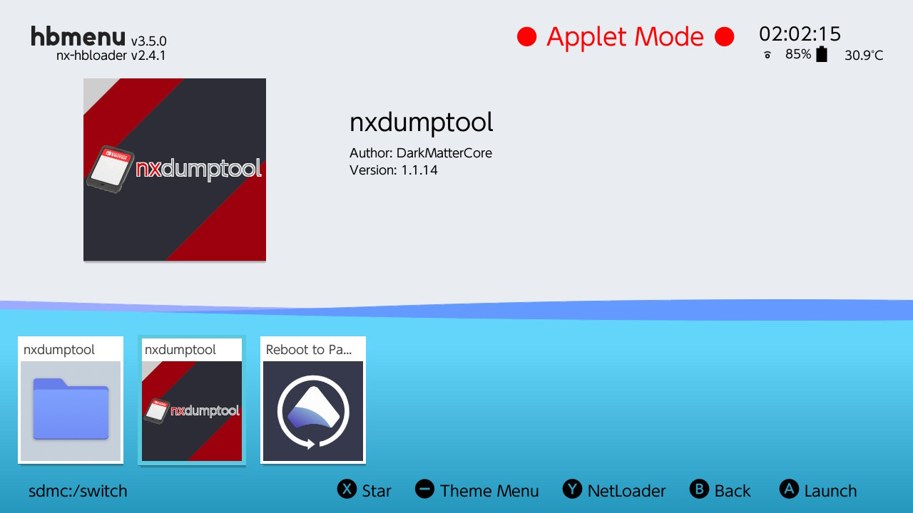
Se dovesse crashare, per favore segnalatecelo!
Daremo per scontato che si sia aperto correttamente.
Come scritto nella sezione superiore dello schermo, puoi navigare i menu di NXDumpTool con il D-Pad o lo stick analogico sinistro.
Seleziona "Dump installed SD card / eMMC content".
Dump installed SD card / eMMC content
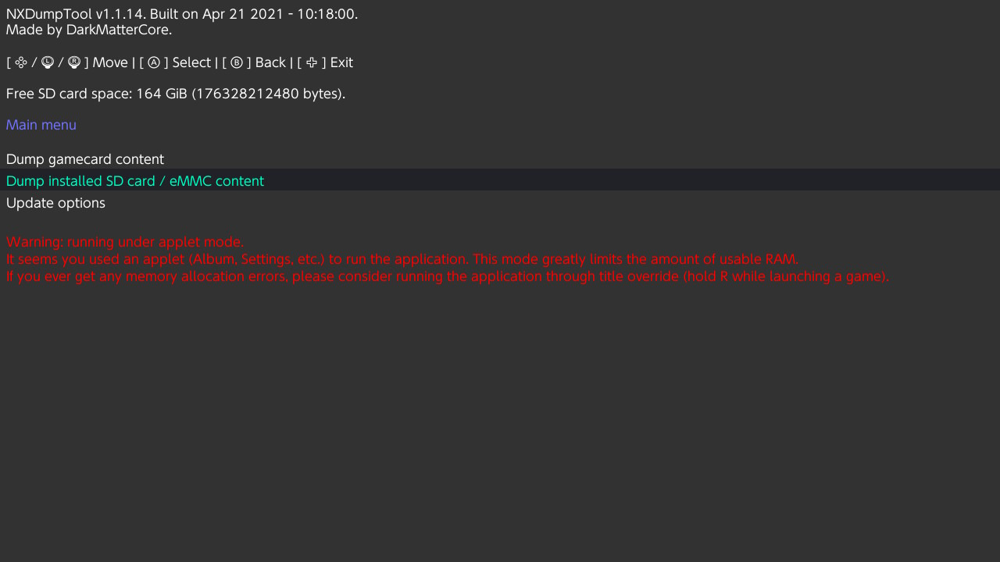
Seleziona "Danganronpa V3: Killing Harmony Anniversary Edition".
Selezionare il gioco
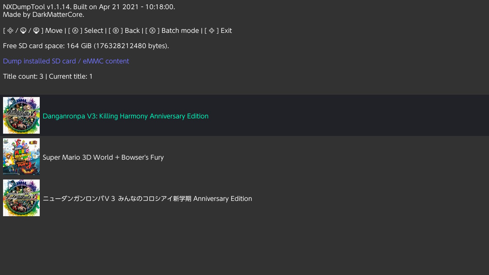
Seleziona "RomFS options".
Le opzioni del gioco
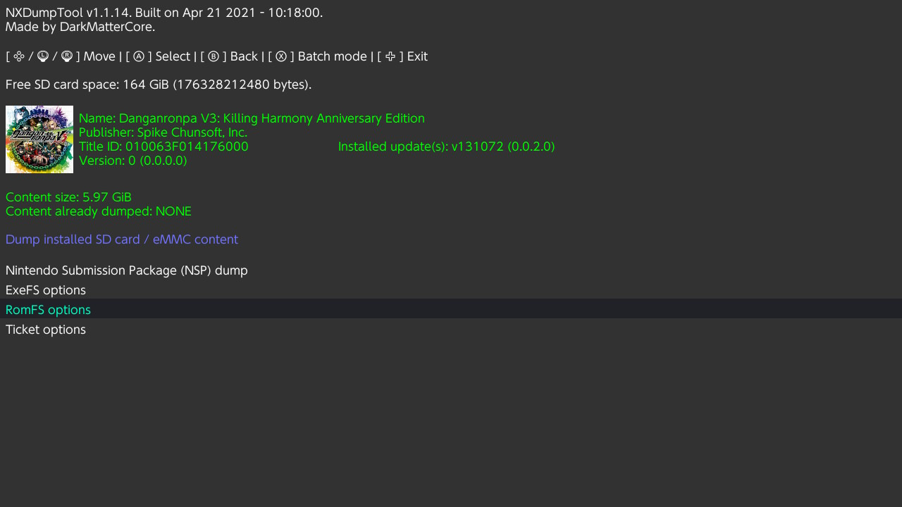
"Save data to CFW directory (LayeredFS)", ovvero la penultima opzione, DEVE essere impostata su "Yes" in modo da poter trovare facilmente i file del gioco.
In caso non lo fosse già, premi il pulsante destro del D-Pad per impostarla su "Yes".
Anche l'opzione sottostante, ossia "Use update/DLC", NON DEVE essere impostata su "No".
Le opzioni del RomFS
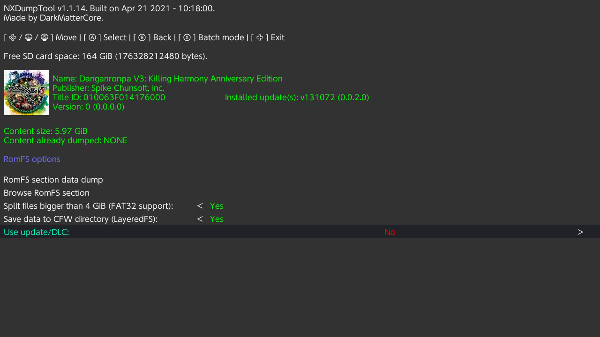
Torna su "RomFS section data dump" e selezionalo per avviare l'estrazione dei file del gioco.
RomFS section data dump
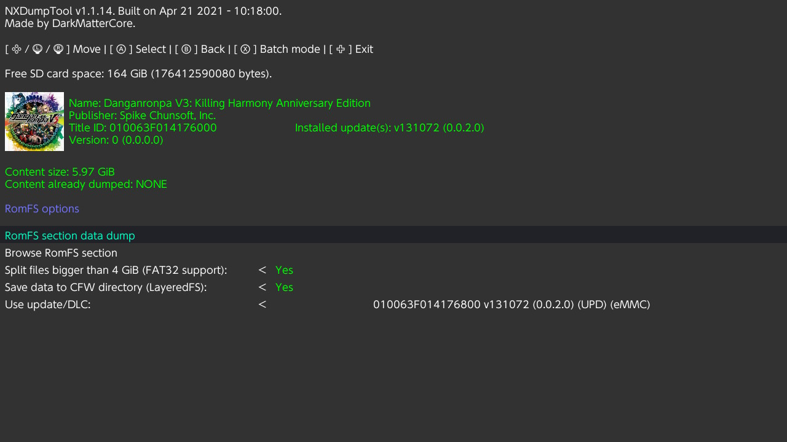
Il processo potrebbe richiedere alcuni minuti o alcune ore, in base alla velocità della tua scheda microSD.
Sfortunatamente, il gioco contiene moltissimi file, pertanto lunghe attese sono inevitabili.
Se l'estrazione dovesse fallire, riprova utilizzando un gioco come "base" per HBMenu, tenendo premuto il pulsante R mentre avvii il suddetto gioco.
Il processo di estrazione
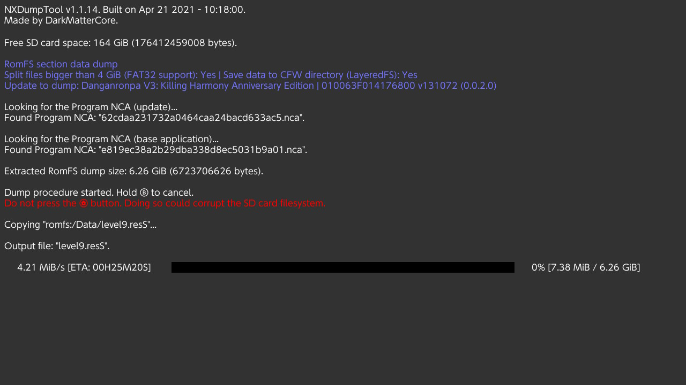
Bene, ha finito!
Estrazione completata
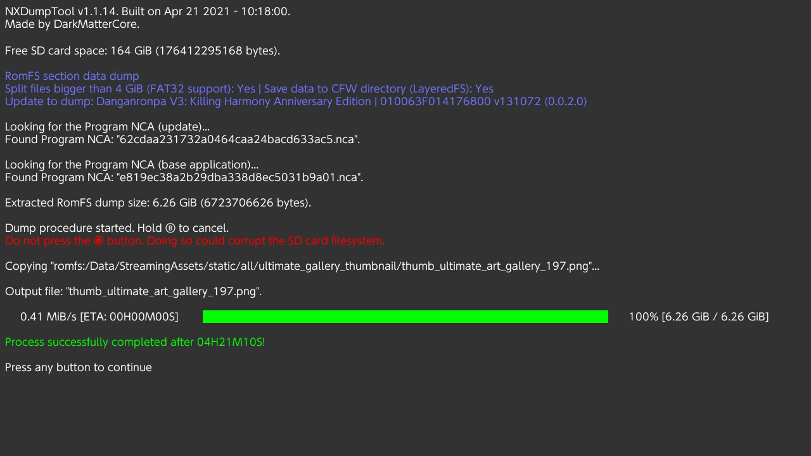
Successivamente, spegni la console, rimuovi la microSD e inseriscila nel PC (tramite eventuale adattatore se necessario).
Una volta riconosciuta, apri Esplora File, dirigiti su "Questo PC" ed entra nella scheda microSD.
Esplora File
Entra nella cartella "atmosphere", e successivamente nella sottocartella "contents" (se non esiste, non hai seguito correttamente la guida).
Come arrivare alla sottocartella 'contents'
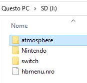
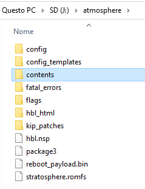
Taglia la sottocartella "010063F014176000", che contiene i file del gioco che hai estratto, in una cartella del tuo PC facilmente identificabile, e memorizzane la posizione.
"010063F014176000" è il cosiddetto "TitleID" del gioco.
Puoi semplicemente utilizzare CTRL+X per tagliare e CTRL+V per incollare.
Tagliare la cartella '010063F014176000'
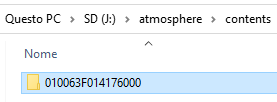
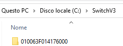
Il processo potrebbe richiedere nuovamente alcuni minuti o alcune ore, in base alla velocità della tua scheda microSD e dei componenti del tuo PC.
La buona notizia è che, dopo aver completato il processo, avrai quasi finito!
Fatto? Ora puoi finalmente installare (o aggiornare) la traduzione italiana!
Congratulazioni, hai ottenuto il titolo di 'Super Paziente Liceale'!
Installare (o aggiornare) la traduzione#
Entra nella cartella dove hai estratto V3UPSManager (Ti ricordi? Lo hai fatto all'inizio), e apri V3UPSManager.exe.
(Nota: la GUI del programma potrebbe essere diversa rispetto agli screenshot a causa del fatto che viene aggiornato tutt'ora)
V3UPSManager
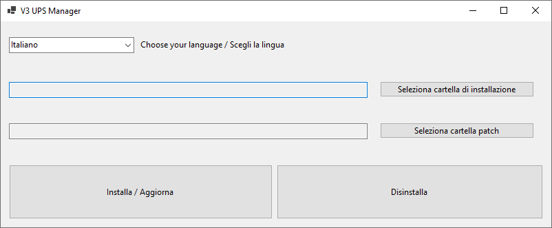
Clicca su "Seleziona cartella di installazione".
(Mostra/Nascondi) Non trovo 'seleziona cartella di installazione'

Nella schermata che si aprirà, seleziona la cartella dove hai copiato i file dalla microSD.
Puoi anche copiare ed incollare l'indirizzo (d)alla barra degli indirizzi.
Successivamente, entra nella cartella con il "TitleID" (in questo caso "010063F014176000") e successivamente nella sottocartella "romfs"
Una volta fatto, clicca su "Selezione cartella" (non è un errore di battitura).
Seleziona l'effettiva cartella di installazione
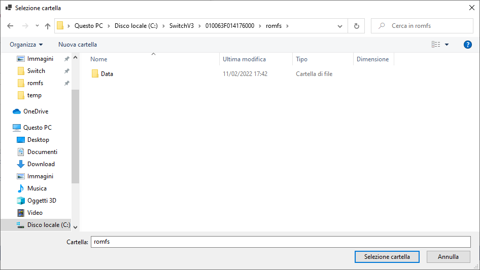
Potrebbe uscire un prompt dicendo che il file .exe del gioco non è stato trovato, ma puoi tranquillamente ignorarlo e cliccare su "OK".
Successivamente, se nulla è andato storto, dovrebbe apparire questo prompt:
Il prompt di V3UPSManager
Clicca su "OK", e passiamo alle patch.
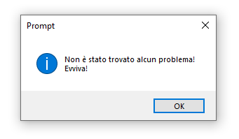
Stavolta clicca su "Seleziona cartella patch"..
(Mostra/Nascondi) Non trovo 'seleziona cartella patch'
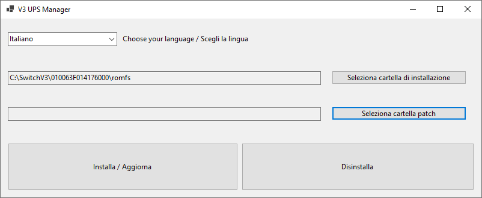
Entra nella cartella "Switch", che si trova dove hai estratto il file Switch.7z della traduzione all'inizio.
Se presenti (dovrebbero esserlo), entra nella sottocartella con il "TitleID" (spiegato precedentemente) e successivamente nella sottocartella "romfs".
Una volta fatto, clicca nuovamente su "Selezione cartella".
Se nulla è andato storto, dopo alcuni secondi (o minuti), apparirà un altro prompt:
Il secondo prompt di V3UPSManager
Clicca su "OK".

Una volta fatto, clicca su "Installa / Aggiorna".
Come effettivamente installare (o aggiornare) la traduzione
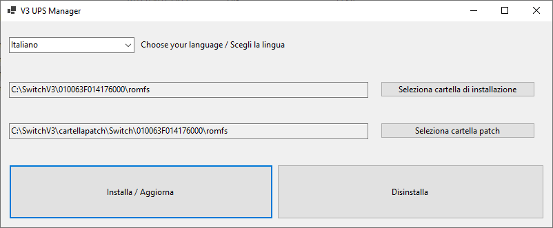
Per l'ultima volta, se nulla è andato storto, apparirà un prompt.
L'ultimo prompt di V3UPSManager
Clicca su "OK".
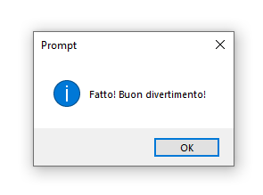
Ora puoi chiudere V3UPSManager.
Copiare i file nella microSD#
Informazione sulla cartella Backup
NOTA:
A causa del fatto che V3UPSManager viene aggiornato tutt'ora, al momento della stesura l'unica cartella presente era la cartella "Backup".
I file modificati potrebbero, invece, trovarsi nella cartella "ModdedFiles", anziché nella cartella "Backup".
Nel caso fosse presente una cartella "ModdedFiles", sostitusci la parola "Backup" qui sotto con "ModdedFiles" (entra dunque nella cartella "ModdedFiles").
Ignora, dunque, la cartella "Backup", in quanto non contiene i file modificati.
Ci scusiamo nuovamente per il disagio.
Apri la sottocartella "Backup" dentro la cartella dove hai estratto V3UPSManager.
Il contenuto della sottocartella 'Backup' (o 'ModdedFiles' se presente)
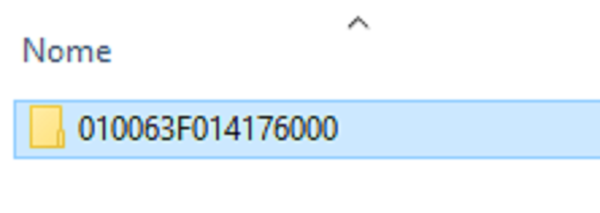
Copia (o taglia) il contenuto della cartella (ossia la sottocartella con il TitleID) e incollalo dentro la sottocartella /atmosphere/contents/ nella scheda microSD.
Dovrai, dunque, entrare nella microSD, poi nella cartella "atmosphere", e infine nella sottocartella "contents".
Sostituisci i file se ti viene richiesto (non dovrebbe essere il caso).
La cartella /atmosphere/contents/ della scheda microSD
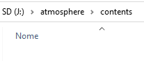
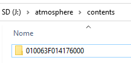
Perché questa volta ci ha messo poco a copiare i file?
La risposta è semplice: perché stavolta i file sono decisamente meno!
Grazie alla funzione LayeredFS, basta copiare solo i file modificati, che "sovrascriveranno" quelli originali all'avvio del gioco.
È una funzione temporanea e reversibile: rimuovere o rinominare la cartella dalla microSD manterrà i file originali.
Ecco fatto!
Reinserisci la scheda microSD nella console, avvia Atmosphére e, finalmente, potrai giocare al gioco* in italiano!
*la parte tradotta nel momento in cui installi la traduzione italiana, che per il momento arriva alla fine del prologo (circa 2 ore di gioco).
E se volessi disinstallare la traduzione?
Se mai volessi disinstallare la traduzione, ti basterà eliminare (preferibile) o rinominare quella cartella dalla scheda microSD.